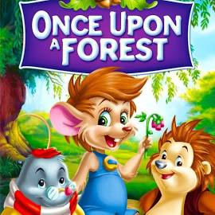

Movies in 90's
My Thoughts/Opinions
By: Melissa Bennett
Date: 04/14/2025
Rock-A-Doodle 1991
Synopsis
In this animated film, Chanticleer (Glen Campbell), a barnyard rooster, has convinced the other animals that his crowing makes the sun rise. When, one day, he forgets to crow and the sun comes up anyway, the secret is out. He heads for the big city in shame. But as massive storms and dark clouds stop the sun from appearing, the farm animals get worried, so a mouse named Peepers (Sandy Duncan) and a kitten called Edmond (Toby Scott Granger) lead the gang on a trip to find Chanticleer in the city.
My Thoughts/Opinion
My sisters and I would watch this movie over and over agian. The anitatioin was great and the music was something we would dance to. 8/10 Would recommend.
The Indian In The Cupboard 1995
Synopsis
On his birthday, Omri (Hal Scardino) is given several simple gifts, including an old wooden cupboard and a small plastic figurine of a Native American man. When he locks the toy inside the cabinet it magically comes to life as a tiny, cagey warrior named Little Bear (Litefoot). The boy then places other toys in the cupboard and they too come to life, even engaging in entertaining battles. But after Little Bear is wounded, Omri begins to understand that his animate toys are not mere playthings.
My Thoughts/Opinion
This is a very unrated movie. For the time it was made, it had great detail in their computer graphics. It made you want a magical cupboard as well!9/10 Would recommend.

The Pagemaster 1994
Synopsis
A storm forces frightened Richard Tyler (Macaulay Culkin) inside a nearby library for shelter. Mr. Dewey (Christopher Lloyd), the librarian, sees that Richard needs an adventure and tries to give the boy a book, but all Richard wants is a phone. Before he can call his parents (Ed Begley Jr., Mel Harris), Richard slips on the floor, hits his head and passes out. When he wakes up, he finds himself in a fantasy land populated by famous literary characters.
My Thoughts/Opinion
The was such an amazing movie! We absolutly loved this when we were kids. The actors/atress were picked with every character in mind.10/10 Would definitely would recommend!

Once Upon A Forest 1993
Synopsis
In this animated tale, a toxic spill from an encroaching construction site threatens the life of a badger (Elisabeth Moss), so three woodland creatures -- wood mouse Abigail (Ellen Blain), mole Edgar (Ben Gregory) and hedgehog Russell (Paige Gosney) -- must brave a treacherous journey to find a cure. As the threat of the destructive humans looms ever closer, the animals are in a race against time as their remaining family and friends struggle to survive in the face of disaster.
My Thoughts/Opinion
This movie made my sisters and go to the edge of our seat and cry at the same time. The is one we only watched a few times, but is a really good movie in the end.7/10 Would recommend.